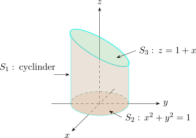

4.10 Surface Integrals
Suppose that a surface \(S\) has a vector equation \[\overline {r}(u,v) = x(u,v)\textbf {i} + y(u,v)\textbf {j} + z(u,v)\textbf {k}\hspace {0.2cm},\hspace {0.5cm} (u,v)\in D\] Then the surface integral of \(f\) over the surface \(S\) is given by
\[\iint \limits _S f(x,y,z)\,dS = \iint \limits _D f\big [\overline {r}(u,v)\big ]\begin {vmatrix} \overline {r}_u \times \overline {r}_v\\ \end {vmatrix}\,dA\]
Note that \(\displaystyle {\iint \limits _S dS = \iint \limits _D\big |\overline {r}_u \times \overline {r}_v\big |\,dA =A(S)}\)
Compute the surface integral \(\displaystyle {\iint \limits _S x^2 \,dS}\) where \(S\) is the unit sphere.
Solution. \[\overline {r}\big (\phi ,\theta \big ) = \sin \phi \cos \theta \, \textbf {i} + \sin \phi \sin \theta \, \textbf {j} + \cos \phi \, \textbf {k}\hspace {0.2cm},\hspace {0.5cm} 0\leq \phi \leq \pi \hspace {0.3cm},\hspace {0.3cm} 0 \leq \theta \leq 2\pi \]
\[\overline {r}_{\phi } \times \overline {r}_{\theta } = \sin ^2\phi \cos \theta \, \textbf {i} + \sin ^2\phi \sin \theta \,\textbf {j} + \sin \phi \cos \phi \,\textbf {k}\]
\[\big | \overline {r}_{\phi } \times \overline {r}_{\theta }\big | = \sin \phi .\hspace {0.5cm} \text {So}\]
\begin {align*} \iint \limits _S x^2\,dS & = \iint \limits _D \big (\sin \phi \cos \theta \big )^2\, \big | \overline {r}_{\phi } \times \overline {r}_{\theta }\big |\,dA\\\\ & = \int ^{2\pi }_0\int ^{\pi }_0 \sin ^2\phi \cos ^2\theta \sin \phi \, d\phi \, d\theta \\\\ & = \int ^{2\pi }_0\cos ^2\theta \,d\theta \int ^{\pi }_0\sin ^3\phi \,d\phi \\\\ & = \frac {4\pi }{3}\\ \end {align*}
If \(S\) is given by \(Z=g(x,y)\) , then \[\iint \limits _S f(x,y,z)\,dS = \iint \limits _D f\big [x,y,f(x,y)\big ]\sqrt { \Bigg (\dfrac {\partial f}{\partial x}\Bigg )^2 + \Bigg (\dfrac {\partial f}{\partial y}\Bigg )^2 + 1}\hspace {0.3cm} dA\]
Evaluate \(\displaystyle {\iint \limits _S y\,dS}\), where \(S\) is the surface \(z = x + y^2\hspace {0.2cm},\hspace {0.5cm} 0\leq x\leq 1\hspace {0.2cm} , \hspace {0.5cm} 0 \leq y \leq 2\)
Solution. \begin {align*} \iint \limits _Sy\, dS & = \iint \limits _D y \,\sqrt {1 + \Big (\dfrac {\partial z}{\partial x}\Big )^2 + \Big (\dfrac {\partial z}{\partial y}\Big )^2}\hspace {0.2cm}dA\\\\ & = \frac {13\sqrt {2}}{3}\\ \end {align*}
If \(S\) is a piecewise - smooth surface, that is a finite union of smooth surfaces \(S_1, S_2,\cdots \cdots , S_n\) that intersect only along their boundaries, then \[\iint \limits _{S} f \hspace {0.1cm}dS = \iint \limits _{S_1}f\hspace {0.1cm}dS + \iint \limits _{S_2}f\hspace {0.1cm}dS + \cdots \cdots \cdots +\iint \limits _{S_n}f\hspace {0.1cm}dS \]
Evaluate \(\displaystyle {\iint \limits _S z\hspace {0.1cm}dS}\), where \(S\) is the surface whose sides \(S_1\) are given by the cylinder \(x^2 + y^2 =1\), whose bottom \(S_2\) is the disk \(x^2 + y^2 \leq 1\) in the plane \(z =0\) , and whose top \(S_3\) is the part of the plane \(z = 1 + x\) that lies above \(S_2\).
Solution.

The surface \(S\) is shown in the figure.
For \(S_1\) , we use \(\theta \) and \(z\) as parameters since the cylinder is given by \(x = \cos \theta \hspace {0.2cm}, \hspace {0.5cm}\\ y = \sin \theta \hspace {0.2cm},\hspace {0.5cm} Z=z\)
\[\overline {r}(\theta ,z) = \cos \theta \,\textbf {i} + \sin \theta \,\textbf {j} + z\,\textbf {k}\]
\[\overline {r}_{\theta } = -\sin \theta \, \textbf {i} + \cos \theta \,\textbf {j}\hspace {1cm} 0 \leq \theta \leq 2\pi \hspace {0.3cm},\hspace {0.3cm} 0\leq z \leq 1 + x = 1 + \cos \theta \]
\[\overline {r}_{z} = \textbf {k}\]
Thus, \begin {align*} \overline {r}_{\theta } \times \overline {r}_z & = \begin {vmatrix} \textbf {i} & \textbf {j} & \textbf {k}\\ -\sin \theta & \cos \theta & 0\\ 0 & 0 & 1\\ \end {vmatrix}\\\\ & = \cos \theta \textbf {i} + \sin \theta \textbf {j}\\ \end {align*}
\begin {align*} \big |\big |\overline {r}_{\theta } \times \overline {r}_z\big |\big | = \sqrt {\cos ^2 \theta + \sin ^2 \theta }= 1\\ \end {align*}
\begin {align*} \iint \limits _{S_1}z\hspace {0.1cm}dS & = \iint \limits _D f\big [\overline {r}(\theta ,z)\big ]\big | \overline {r}_{\theta } \times \overline {r}_z\big | dA\hspace {1cm} \text {where}\hspace {0.4cm} f\big [\overline {r}(\theta ,z)\big ]=z\\ & = \int ^{2\pi }_0 \int ^{1 + \cos \theta }_0 z\hspace {0.1cm}dz\hspace {0.1cm} d\theta \\\\ & = \frac {3}{2}\pi \\ \end {align*}
\(S_2\) lies in the plane \(z = 0\), so we have \[\iint \limits _{S_2}z\hspace {0.1cm}dS = \iint \limits _{S_2}0\hspace {0.1cm}dS = 0\]
On \(S_3\), \(z = 1 + x\) and the projection onto the \(xy-\) plane is the unit disk \(D\). So taking \(g(x,y) = 1 +x,\)
we get \[\iint \limits _{S_3} f(x,y,z) dS = \iint \limits _D f(x,y,g(x,y))\sqrt {\Big (\dfrac {\partial f}{\partial x}\Big )^2 + \Big (\dfrac {\partial f}{\partial y}\Big )^2 + 1}\hspace {0.1cm}dA\]
\[\frac {\partial g}{\partial x} = 1\hspace {0.5cm} , \hspace {0.5cm} \frac {\partial g}{\partial y}=0\]
\begin {align*} \iint \limits _{S_3} z\hspace {0.1cm} dS & = \iint \limits _D (1+x)\sqrt {2}dA\hspace {0.2cm},\hspace {1cm} D\hspace {0.2cm}\text {is unit disk}\\\\ & = \int ^{2\pi }_0\int ^1_0 r\big ( 1 + r\cos \theta \big ) \sqrt {2}\hspace {0.1cm} dr\hspace {0.1cm} d\theta \\\\ & = \sqrt {2}\pi \\ \end {align*}
\begin {align*} \therefore \hspace {1cm} \iint \limits _{S} z \hspace {0.1cm}dS & = \iint \limits _{S_1} z \hspace {0.1cm}dS + \iint \limits _{S_2} z \hspace {0.1cm}dS + \iint \limits _{S_3} z \hspace {0.1cm}dS\\\\ & = \frac {3\pi }{2} + 0 + \sqrt {2}\pi \\\\ & = \Bigg ( \frac {3}{2}+ \sqrt {2}\Bigg )\pi \\\\ \end {align*}
Questions on this section
Stuck on something here? Ask below and it stays attached to this topic.